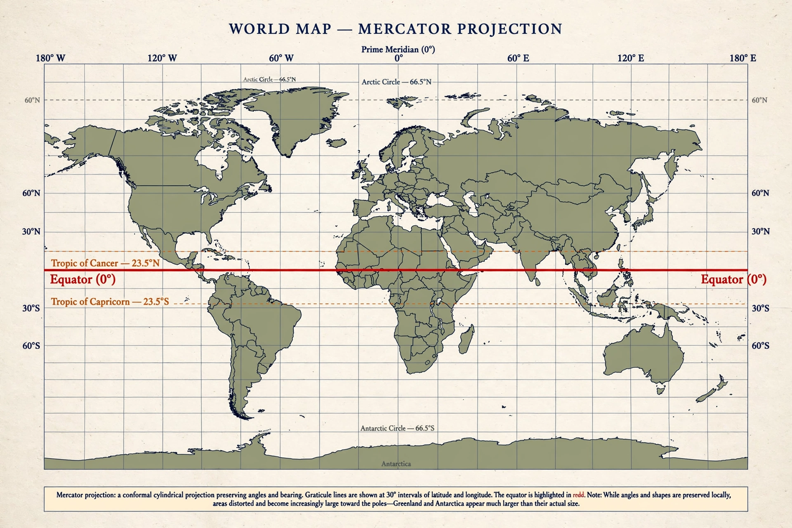

Wikipedia — the free encyclopedia
| Type | Cartographic method |
| Problem | A sphere cannot be flattened without distortion |
| Famous examples | Mercator; Robinson; equal-area projections |

The world on the Mercator projection.
A map projection is a systematic method of representing the curved surface of Earth — its latitudes and longitudes — on a flat sheet. It is a mathematical certainty, formalised by Gauss, that no flat map can preserve everything: area, shape, distance and direction cannot all be exact at once, so every projection is a compromise that distorts the rest. Choosing a projection means choosing which property matters for the map's purpose.
Projections are classified by the surface onto which the globe is notionally projected — plane, cone or cylinder — and by the property they preserve: conformal projections keep local angles and shapes, equal-area projections keep areas true, equidistant ones keep some distances.
The Mercator projection (1569), designed for sailors, draws every line of constant compass bearing as a straight line, at the cost of hugely inflating high latitudes — Greenland appears comparable to Africa though it is some fourteen times smaller. It nevertheless became the standard for web maps. Twentieth-century alternatives such as the Robinson projection compromise all properties gently for a pleasing world view, while the Gall–Peters equal-area projection sparked public controversy by insisting on true areas. Ptolemy described the first known projections in the second century AD.